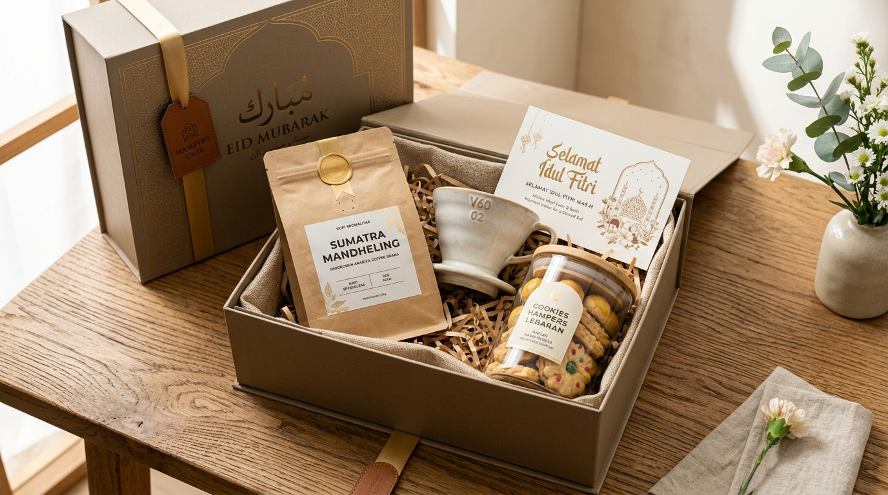

Sebagai bagian dari panduan induk parcel Lebaran kekinian, artikel ini mengulas secara terperinci tujuh inspirasi model dan tema hampers modern yang unik, fungsional, dan sarat nilai estetika untuk mempererat silaturahmi Idulfitri.
Apa Saja Inspirasi Parcel Lebaran Modern dan Unik?
Parcel Lebaran modern memberikan kebebasan berekspresi bagi masyarakat yang ingin menghadirkan bingkisan berbeda dari paket konvensional. Pendekatan ini tidak hanya mengandalkan tumpukan biskuit kaleng atau sirup botol, melainkan menggabungkan produk berdasarkan fungsi, gaya hidup, dan nilai emosional penerima.
Pemilihan satu tema utama menjadi kunci agar produk-produk di dalam bingkisan terlihat serasi, saling melengkapi, dan memiliki tujuan pemakaian yang jelas setelah hari raya usai.
1. Parcel Eco-Friendly dengan Produk Reusable
Konsep eco-friendly mengusung semangat keberlanjutan dengan mengombinasikan produk yang dapat digunakan berulang kali serta kemasan luar yang tidak menjadi sampah sekali pakai.
Contoh kombinasi produk ramah lingkungan:
- Tumbler stainless steel vacuum insulated (menjaga suhu dingin/panas hingga 12 jam).
- Lunch box kaca atau stainless reusable dengan penutup kayu bambu.
- Set sendok garpu dan sedotan berbahan bambu alami.
- Tote bag kanvas tebal berdesain kaligrafi minimalis.
- Sabun mandi batang herbal berbungkus kertas daur ulang.
Wadah kemasan dapat menggunakan kotak kardus kraft daur ulang, keranjang anyaman mendong/rotan alami, atau tas jinjing kain. Nuansa warna earth tone (cokelat tanah, krem gandum, hijau zaitun) semakin menegaskan kesan alami yang hangat.
Konteks Lingkungan: Menurut data Sistem Informasi Pengelolaan Sampah Nasional (SIPSN) 2024 yang dirilis Kementerian Lingkungan Hidup dan diberitakan Katadata pada April 2025, komposisi sampah plastik di Indonesia masih berkisar di angka 19,64% dari total timbulan sampah terdata. Menggunakan wadah hampers reusable merupakan langkah bijak untuk merayakan Idulfitri dengan minim sampah (less waste celebration).
2. Parcel Lifestyle untuk Penerima yang Memiliki Hobi
Hampers gaya hidup dirancang khusus menyesuaikan rutinitas dan hobi penerima, menjadikannya hadiah yang terasa begitu personal dan penuh perhatian:
- Paket Pencinta Kopi (Coffee Enthusiast): Kombinasi biji kopi arabika single-origin Nusantara (seperti Gayo atau Kintamani), alat seduh V60 ceramic dripper, cangkir keramik handmade, dan toples biskuit almond renyah.
- Paket Traveling & Silaturahmi: Sajadah lipat travel bahan parasut silk antiair, pouch serbaguna, tumbler mini, dan dompet kartu kulit sintetis.
- Paket Produktivitas Profesional: Agenda hardcover tahun berjalan, pulpen berukir nama, organizer meja berbahan kayu, dan camilan sehat kacang mede panggang.

3. Parcel Home Wellness untuk Relaksasi di Rumah
Setelah sebulan penuh berpuasa dan menjalani kesibukan persiapan Lebaran, paket relaksasi rumah menjadi hadiah yang sangat dirindukan. Bingkisan ini mencakup:
- Ultrasonic diffuser mini dengan lampu tidur LED lembut.
- Pure essential oil beraroma lavender, eucalyptus, atau serai wangi.
- Lilin aromaterapi kedelai (soy candle) dengan sumbu kayu yang menenangkan.
- Sabun cuci tangan botol kaca dan krim pelembap tangan (hand cream).
- Handuk tangan katun jacquard bertekstur lembut.
4. Parcel Kuliner Premium untuk Keluarga
Sajian kuliner tetap menjadi primadona utama di meja ruang tamu saat silaturahmi Lebaran. Bedanya, versi modern mengutamakan kualitas bahan baku premium dan toples kedap udara berbentuk minimalis:
| Tema Kuliner | Kombinasi Produk yang Disarankan |
|---|---|
| Traditional Treats | Nastar wisman nanas madu, kastengel keju edam tua, putri salju mede. |
| Sweet Celebration | Cokelat praline artisan, macaron warna pastel, madu multiflora murni. |
| Tea Time Delight | Teh artisan bunga telang/chamomile, biskuit lidah kucing, toples madu dan sendok kayu. |
| Dates Collection | Kurma ajwa organik, kurma medjool isi kacang almond, sari kurma murni. |
| Local Delights | Keripik buah apel Malang oven, kopi luwak robusta, kue semprong wijen. |
Pilihan kue kering legendaris ini dapat Anda temukan pada Paket Spesial Fitrah kami.
5. Parcel Peralatan Dapur Modern
Sangat disukai oleh keluarga, ibu rumah tangga, dan kerabat yang gemar memasak serta menata meja makan. Kombinasi produk meliputi:
- Satu set piring makan dan mangkuk keramik glasir bernuansa pastel.
- Teko teh kaca tahan panas dengan saringan infuser stainless.
- Toples bumbu kaca dengan tutup kayu akasia bersegel silikon.
- Serbet dapur katun linen bermotif garis minimalis.
6. Hampers Perlengkapan Ibadah yang Elegan
Idulfitri adalah hari kemenangan spiritual. Menghadiahkan perlengkapan salat yang indah menjadi doa kebaikan bagi yang memakainya:
- Sajadah beludru turki atau tenun sutra dengan rumbai halus.
- Mukena katun sutra berenda Prancis yang adem dan ringan.
- Sarung tenun jacquard berkualitas tinggi bagi pria.
- Tasbih batu alam (seperti giok atau kokka) dengan wadah pouch beludru.
- Mushaf Al-Qur'an terjemahan ukuran saku dengan cover beremboss kaligrafi emas.
7. Hampers Corporate Gifting untuk Klien dan Mitra Bisnis
Bagi institusi, perbankan, dan perusahaan B2B, bingkisan Lebaran berfungsi memperkuat kemitraan bisnis jangka panjang. Pengadaan massal membutuhkan sentuhan desain yang formal dan terpercaya:
Gunakan hardbox eksklusif bernuansa biru navy gelap atau hijau zamrud dengan custom sleeve berlogo perusahaan Anda. Lengkapi dengan kartu ucapan bertandatangan pimpinan instansi. Anda dapat melihat contoh implementasi riil pada halaman portofolio pengadaan parcel kami.
Bagaimana Memilih Desain Hampers Lebaran yang Estetik?
Kunci keindahan visual terletak pada konsistensi konsep warna dan proporsi wadah:
| Konsep Visual | Kombinasi Warna | Rekomendasi Wadah |
|---|---|---|
| Minimalis Modern | Putih gading, beige, abu-abu muda | Rigid hardbox polos berstempel logo foil |
| Natural Eco-Friendly | Sage green, cokelat kayu, krem | Keranjang anyaman rotan / boks kraft daur ulang |
| Luxury VIP | Navy blue, gold foil, emerald green | Hardbox linen mewah dengan magnet penutup |
| Rustic Nusantara | Cokelat kayu sawo, broken white | Peti kayu pinus natural dengan grafir laser |
Bagaimana Menentukan Parcel Berdasarkan Penerima?
Gunakan matriks praktis berikut agar hadiah Anda tepat sasaran dan berkesan mendalam:
| Target Penerima | Rekomendasi Konsep Bingkisan |
|---|---|
| Orang Tua & Mertua | Kue kering klasik wisman, madu murni, kurma ajwa, dan sajadah sutra tebal. |
| Keluarga Besar / Saudara | Peralatan dapur keramik, toples biskuit aneka rasa, dan set sirup buah segar. |
| Sahabat Dekat | Paket kopi arabika, lilin aromaterapi, tumbler custom nama, atau snack kekinian. |
| Rekan Kerja / Tim Kantor | Agenda kerja, tumbler stainless, voucher kopi, dan toples cookies personal. |
| Atasan / Pejabat Direksi | Hampers premium rigid hardbox Navy-Gold berisi sajian gourmet dan kerajinan perak. |
| Klien & Mitra Korporat | Paket corporate gift berlogo kantor, kopi single origin, dan kartu ucapan apresiasi bisnis. |
Tanya Jawab Seputar Inspirasi Parcel Lebaran Modern
Contohnya adalah hampers bertema eco-friendly dengan wadah reusable, paket kopi manual brew dengan biji kopi single origin, paket home wellness relaksasi dengan diffuser dan scented candle, perlengkapan makan keramik estetik, serta perlengkapan ibadah premium.
Gunakan kemasan kokoh seperti rigid hardbox, terapkan kombinasi palet warna yang konsisten (seperti navy-gold atau earth-tone alami), tata produk secara berjenjang dan rapi, serta batasi ornamen agar tampilannya tetap berkelas tanpa kesan ramai berlebihan.
Hampers untuk sahabat dapat disesuaikan dengan kesukaannya, misalnya racikan kopi lokal, camilan manis kue kering toples mini, set perawatan diri (body lotion, hand cream), atau pernak-pernik dekorasi meja kerja yang fungsional.
Untuk klien korporat, pilih kombinasi kuliner premium (nastar wisman, kurma medjool, cokelat eksklusif), tumbler stainless beremboss logo elegan, agenda kerja kulit sintetis, serta kartu ucapan apresiasi kemitraan resmi.
Kesimpulan Praktis
Menciptakan parcel Lebaran yang modern dan unik tidak melulu membutuhkan anggaran selangit. Kunci utamanya terletak pada ketepatan kurasi tema, keselarasan warna kemasan, dan nilai fungsi yang langsung dirasakan oleh penerimanya.
Untuk mempelajari racikan produk isi hampers secara mendalam, lanjutkan membaca artikel kami tentang ide isi parcel Lebaran kekinian serta panduan tips menata parcel agar rapi dan aman dikirim.
Tertarik Mewujudkan Hampers Modern Impian Anda?
Konsultasikan tema bingkisan, pilihan isi, dan kemasan estetik bersama tim spesialis Parcel Lebaran. Dapatkan simulasi desain dan penawaran terbaik.